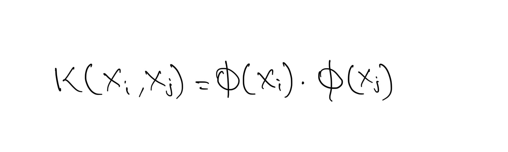

SUPPORT VECTOR MACHINE
OVERVIEW
Support Vector Machines are a popular supervised learning algorithm used for both classification and regression tasks in machine learning.
They are linear seperators as them find a linear decision boundary that seperates the data points into different classes. This decision boundary is defined by a hyperplane in the feature space. It can only seperate two categories. For multiple categories, atleast 2 SVM's are required.

Kernel:
SVMs use Kernel which enables it to seperate data which is not linearly seperable in its dimensional space and finds a dimensional space where it is linearly seperable.
Suppose we have a function:
K is called a Kernel function. The Kernel function provides the dot product in another space.

If we have n points in our dataset, the SVM needs only the dot product of each pair of points to find a classifier. This is also true when we want to project data to higher dimensions. We don’t need to provide the SVM with exact projections; we only need to give it the dot product between all pairs of points in the projected space. This is relevant because this is exactly what kernels do. A kernel, short for kernel function, takes as input two points in the original space, and directly gives us the dot product in the projected space.
- L as well as the decision boundary equation only depend on the dot products of vectors.
- Therefore, to optimize, we only need φ(xi) dot φ(xj) for all xk and for any kernel, φ
- For the decision boundary, all we need is: φ(xi) dot (φ(xnew)) for any kernel φ. Therefore – we only need dot products.
There are different types of Kernels.

Polynomial Kernel:

Example:

RBF (Radial Basis Function) Kernel:

PLAN
- Load the cleaned Denver weather dataset, preprocess it to label weather descriptions, convert features into Category/Factor type, and filter data for Denver only.
- Split the dataset into training and testing sets using stratified sampling stratified sampling in python and random sampling without replacement in R to ensure proportional representation of each class in both sets.
- Train SVM Classifier models with different kernels and cost combinations, evaluate accuracy, and generate confusion matrices.
DATA PREPARATION
R(rpart) can perform Decision Tree on mixed labeled data (quantitative and qualitative) whereas in Python (Sklearn), data must be quantitative and labeled.
- In sklearn, for classification tasks (DecisionTreeClassifier), the default criterion is 'gini', which refers to the Gini impurity.
- In sklearn, for regression tasks (DecisionTreeRegressor), the default criterion is 'mse', which stands for Mean Squared Error.
- In rpart, the default splitting criterion for regression trees is "anova" (analysis of variance), while for classification trees, it's "gini" or "information gain" (using the deviance).
- Before Transformation:
- After Filtering Denver Data:
- After Transformation (Python):
- After Transformation (R):
- Splitting data into Train and Test set (Python):
- Checking the balance of the Train and Test set (Python):
- Splitting data into Train and Test set (R):
- Checking the balance of the Train and Test set (R):
- Classification Dataset:
The below image shows the sample of data before transformation.

The below image shows the data after filtering city by Denver.

The below image shows the data after after After labelling (clear/not clear) the data for classification and changing its type to Category.

The below image shows the labelling (clear/not clear) the data for classification and changing its type to Factor.

The below image shows train and test data created using stratified sampling to ensure that each class is represented proportionally in both sets. Train and test sets are disjoint to ensure that the model is evaluated on data it hasn't seen during training, enabling an unbiased assessment of its performance.

The below image shows the distribution of labels in the Train and Test set. They are well balanced.

The below image shows train and test data created using Random sample without replacement. Train and test sets are disjoint to ensure that the model is evaluated on data it hasn't seen during training, enabling an unbiased assessment of its performance.

The below image shows the distribution of labels in the Train and Test set. They are well balanced.

CODE
- SVM (Python):
- SVM (R):